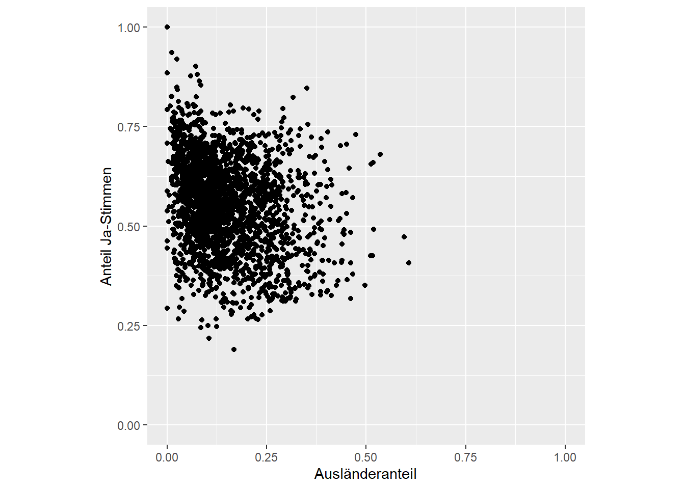
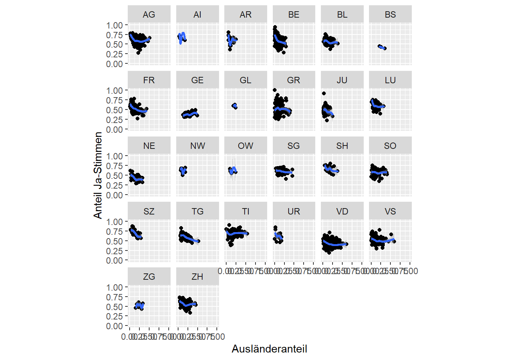
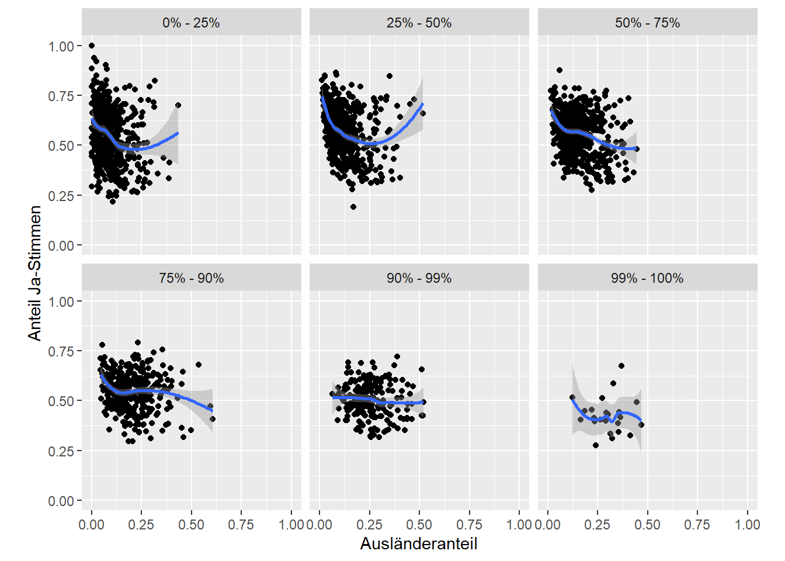

library(dplyr)
library(ggplot2)
library(readr)
kanton <- read_csv("datasets/infovis/tagi_data_kantone.csv") Infovis 1: Übung
In dieser Übung geht es darum, die Grafiken aus dem Blog-post Kovic (2014) zu rekonstruieren. Der urspüngliche Blogpost ist nicht mehr verfügbar, wir haben deshalb eine Kopie auf folgender Website gehostet:
https://researchmethods-zhaw.github.io/blog.tagesanzeiger.ch/
Schau dir die Grafiken in dem Blogpost durch. Freundlicherweise wurden im Blogbeitrag die ggplot2 Standardeinstellungen benutzt, was die Rekonstruktion relativ einfach macht. Die Links im Text verweisen auf die Originalgrafik, die eingebetteten Plots sind meine eigenen Rekonstruktionen.
Importiere als erstes den Datensatz tagi_data_kanton.csv (dieser ist auch auf der Blog-Seite verfügbar).
Aufgabe 1
Rekonstrukturiere folgenden Plot aus Kovic (2014) mithilfe von ggplot und dem tagi_data_kanton.csv Datensatz:
Tipp:
- Nutze
ggplot(kanton, aes(auslanderanteil, ja_anteil))um den ggplot zu initiieren. Füge danach ein einen Punkte Layer hinzu (geom_point()) - Nutze
coord_fixed()um die beiden Achsen in ein fixes Verhältnis zu setzen (1:1). - Optional:
- Setze die Achsen Start- und Endwerte mittels
scale_y_continuousbzw.scale_x_continuous. - Setze analog Kovic (2014) die
breaks(0.0, 0.1…0.7) manuell (innerhalbscale_*_continuous) - Nutze
labs()für die Beschriftung der Achsen
- Setze die Achsen Start- und Endwerte mittels
Musterlösung
# Lösung zu Aufgabe 1
plot1 <- ggplot(kanton, aes(auslanderanteil, ja_anteil)) +
geom_point() +
coord_fixed(1) +
scale_y_continuous(breaks = c(0,0.1,0.3,0.5,0.7),limits = c(0,0.7)) +
scale_x_continuous(breaks = c(0,0.1,0.3,0.5,0.7),limits = c(0,0.7)) +
labs(y = "Anteil Ja-Stimmen", x = "Ausländeranteil")
plot1Aufgabe 2
Rekonstrukturiere folgenden Plot aus Kovic (2014) mithilfe von ggplot:
Tipp:
- Nutze
geom_smooth
Musterlösung
# Lösung zu Aufgabe 2
plot1 +
geom_smooth()Aufgabe 3
Importiere die Gemeindedaten tagi_data_gemeinden.csv.
Rekonstrukturiere folgenden Plot aus Kovic (2014) mithilfe von ggplot und dem tagi_data_gemeinden.csv Datensatz:
Tipp:
- Nutze
geom_point() - Nutze
labs() - Nutze
coord_fixed()
Musterlösung
# Lösung zu Aufgabe 3
gemeinde <- read_csv("datasets/infovis/tagi_data_gemeinden.csv")
plot2 <- ggplot(gemeinde, aes(anteil_ausl, anteil_ja)) +
geom_point() +
labs(x = "Ausländeranteil",y = "Anteil Ja-Stimmen") +
coord_fixed(1) +
lims(x = c(0,1), y = c(0,1))
plot2
Aufgabe 4
Rekonstrukturiere folgenden Plot aus Kovic (2014) mithilfe von ggplot und dem tagi_data_gemeinden.csv Datensatz:
Tipp:
- Nutze
geom_smooth
Musterlösung
# Lösung zu Aufgabe 4
plot2 +
geom_smooth()Aufgabe 5
Rekonstrukturiere folgenden Plot aus Kovic (2014) mithilfe von ggplot und dem tagi_data_gemeinden.csv Datensatz:
Tipp:
- Nutze
facet_wrapum einen Plot pro Kanton darzustellen.
Musterlösung
# Lösung zu Aufgabe 5
plot3 <- plot2 +
facet_wrap(~kanton)
plot3Aufgabe 6
Rekonstrukturiere folgenden Plot aus Kovic (2014) mithilfe von ggplot und dem tagi_data_gemeinden.csv Datensatz:
Tipp:
- Nutze
geom_smooth
Musterlösung
# Lösung zu Aufgabe 6
plot3 +
geom_smooth()
Aufgabe 7
Rekonstrukturieren folgenden Plot aus Kovic (2014) mithilfe von ggplot und dem tagi_data_gemeinden.csv Datensatz:
Tipp:
- Nutze
facet_wrap
Musterlösung
# Lösung zu Aufgabe 7
plot4 <- plot2 +
facet_wrap(~quantile)
plot4Aufgabe 8
Rekonstrukturiere folgenden Plot aus Kovic (2014) mithilfe von ggplot und dem tagi_data_gemeinden.csv Datensatz:
Tipp:
- Nutze
geom_smooth
Musterlösung
# Lösung zu Aufgabe 8
plot4 +
geom_smooth()
Kovic, Marko. 2014. „Je weniger Ausländer, desto mehr Ja-Stimmen? Wirklich?“ Tagesanzeiger Datenblog. https://blog.tagesanzeiger.ch/datenblog/index.php/668/je-weniger-auslaender-desto-mehr-ja-stimmen-wirklich.